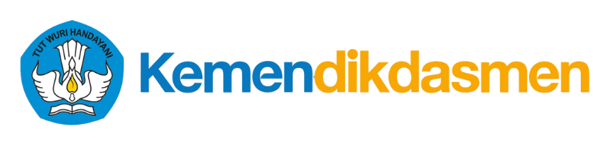
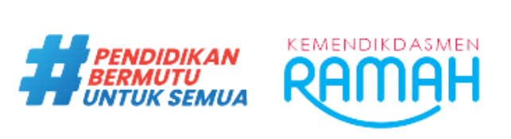
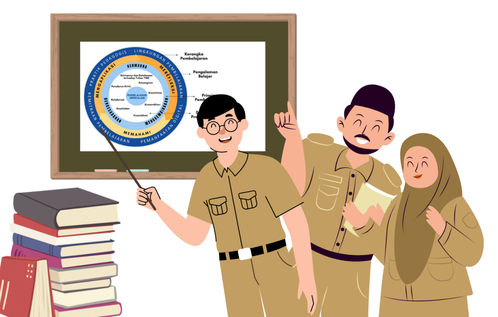
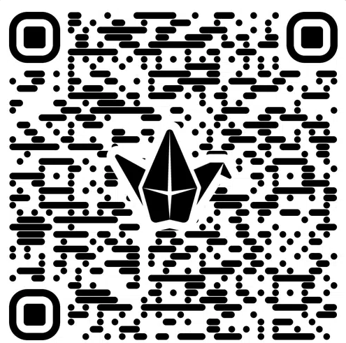

MGMP Mapel Matematika SMP
Kabupaten Lampung Tengah
Siklus 3 • 2 × 45 menit
Selasa, 6 Oktober 2026 • 19.35–21.15 WIB



Salam pembuka
Doa bersama
Penyampaian tujuan pendampingan
Semua peserta punya kesempatan berpendapat
Berpikiran terbuka; yang lain bicara, kita mendengarkan
Berpendapat setelah dipersilakan
Berpartisipasi penuh sepanjang sesi
Mengikuti sesi dengan perasaan gembira
Pembukaan — salam, doa, penyampaian tujuan pendampingan
Refleksi & Berbagi — menulis refleksi, menyampaikan bergantian, umpan balik konstruktif + penguatan fasilitator
Penutup — refleksi, penguatan & kesimpulan, foto bersama

📱 Pindai QR atau buka:
🔗 padlet.com/gunanto1010/fkk-daring-siklus-3-s0247k3vcj0qnhx0gy2a
Setiap peserta bergantian menyampaikan refleksi dari Padlet
Peserta lain memberi umpan balik konstruktif
Fasilitator memberi umpan balik & penguatan
Hal baru apa dari Siklus 3 yang paling berdampak pada diri Bapak/Ibu?
Praktik apa yang akan Bapak/Ibu coba minggu ini?
Kesimpulan pendampingan
Foto bersama 📸
Info alur pembelajaran siklus berikutnya
Refleksi hasil pemetaan profil & identifikasi masalah + siklus Inkuiri Kolaboratif; umpan balik KK Sekolah
Refleksi hasil pembelajaran GM & PM; umpan balik KK Sekolah
Refleksi sesuai PPA & Standar Proses terintegrasi PID; umpan balik KK Sekolah
Refleksi pembelajaran mendalam + penguatan materi esensial ke-1, ke-2, ke-3; umpan balik KK Sekolah